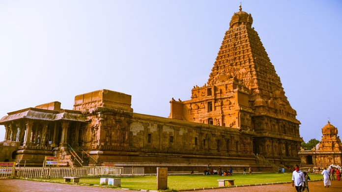

TAMILNADU

Tamil Nadu, located in the southern part of India, is a state renowned for its rich cultural heritage, ancient temples, and
classical arts. The capital city, Chennai, is a bustling hub known for its vibrant culture, Marina Beach
(one of the longest beaches in the world), and thriving film industry, often called "Kollywood". Tamil Nadu is steeped in history,
with magnificent temples like the Meenakshi Amman Temple in Madurai and the Brihadeeswarar Temple in Thanjavur showcasing exquisite
Dravidian architecture. The state is also famous for its traditional music, dance forms such as Bharatanatyam, and culinary delights
like dosa, idli, and filter coffee. With its blend of history, culture, and natural beauty, Tamil Nadu offers a captivating experience
for visitors from around the globe.